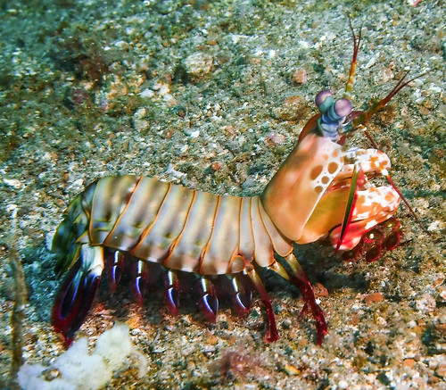

Fatos sobre o Stomatopoda.
Classificação científica
Nome Científico: Odontodactylus scyllarus
Reino: Animalia
Filo: Arthropoda
Subfilo: Crustacea
Classe: Malacostraca
Subclasse: Hoplocarida
Ordem: Stomatopoda
Crustáceos estomatópodes

Os crustáceos estomatópodes (camarões louva-a-deus) possuem um sistema visual
incrivelmente complexo,
composto por olhos compostos que contêm mais tipos de fotorreceptores do que em qualquer outro animal
conhecido.
O arsenal óptico do olho do camarão mantis inclui capacidade de detecção de alcance monocular,
visão de cores de 12 canais, detecção de polarização linear de 2 canais e, em algumas espécies,
a capacidade de detectar e analisar luz polarizada circularmente.
Células R1-R7
Cada omatídio nos hemisférios é longo e fino, com um rabdom consistindo de uma célula R8 curta no topo de
um
anel de células R1-R7 .
Existem dois conjuntos de microvilosidades distribuídos pelas 8 células. Um conjunto consiste em planos
paralelos de microvilosidades coplanares, enquanto o outro conjunto é distribuído de forma semelhante em
planos perpendiculares aos do primeiro conjunto.
Célula R8

A célula R8 tem ambos os conjuntos, mas as outras células R1-R7 têm um
conjunto cada.
Isso pode ter significado, como discutido abaixo.
Quando a luz solar não polarizada entra na atmosfera terrestre, ela interage com as moléculas
atmosféricas e é
espalhada (preferencialmente na extremidade azul do espectro) em todas as direções. Quando vista em um
ângulo de 90o em relação ao feixe incidente, a luz espalhada aparece polarizada linearmente, o que
significa que o vetor
elétrico da onda de luz está ao longo de uma linha perpendicular ao feixe incidente e à linha de visão.
O céu está, portanto, cheio de luz polarizada linearmente.
Muitas espécies animais (por exemplo, abelhas, gafanhotos) desenvolveram a capacidade de usar essa
polarização ambiental para
navegar mesmo quando o sol está obscurecido.
Conjuntos de planos
 Os dois conjuntos de planos destroem assim a sensibilidade de polarização linear (LPS).
No entanto, não está claro o que acontece a seguir nas células R1-R7 .
Como cada uma dessas células tem apenas um conjunto de planos microvilares paralelos, tudo depende do
que o
receptor dos sete sinais independentes faz com eles.
Poderia fundi-los para destruir LPS ou usá-los para obter vantagem.
Qual destes realmente acontece ainda não é conhecido.
Experimentos mostraram que os estomatópodes têm capacidade de encontrar distâncias
monocular e binocular,
sendo o primeiro de curto alcance e o último de longo alcance. A maioria dos omatídios nos hemisférios,
no
entanto, são paralelos entre si, bem como aos omatídios na banda média e, portanto, amostram quase os
mesmos campos visuais estreitos.